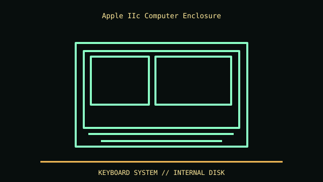

[ IDENTIFIED ENCLOSURE // APPLE IIC (A2S4000), 1984 ]
Apple IIc Computer Enclosure
Approx. 30.4 × 30.4 × 7.3 cm (W × D × H); portable all-in-one desktop shell with an integrated keyboard.

REVISION / FIT CAVEAT: Original IIc ROM revisions, IIc Plus and later motherboard swaps are not the same system. The case label A2S4000 and board ROM/assembly markings matter; repaired units may have upgrades.
Model-specific mechanical record
| Catalog leaf | Vintage desktop and integrated computer systems |
|---|---|
| Identity / generation | Apple IIc (A2S4000), 1984 |
| Dimensions / clearance | Approx. 30.4 × 30.4 × 7.3 cm (W × D × H); portable all-in-one desktop shell with an integrated keyboard. |
| Drive bays / mounts | One internal 5.25-inch floppy mechanism; no internal expansion-card slots or standard desktop drive cage. External disk devices use the dedicated drive port. |
| Board / chassis compatibility | Proprietary logic board and keyboard/case assembly. The case is not an ATX enclosure; expansion depends on IIc-compatible external peripherals and the memory-expansion socket. |
| Revision identification | Original IIc ROM revisions, IIc Plus and later motherboard swaps are not the same system. The case label A2S4000 and board ROM/assembly markings matter; repaired units may have upgrades. |
Compatibility and preservation
Proprietary logic board and keyboard/case assembly. The case is not an ATX enclosure; expansion depends on IIc-compatible external peripherals and the memory-expansion socket.
Preserve the keyboard membrane, case clips and rear port labels. Photograph underside model label and board revision before separating the top shell; no CRT/high-voltage service is involved.
Before transfer or restoration, photograph the complete model label, assembly/board revisions, bay/backplane identifiers and included accessories. Measure the actual specimen when planning installation or shipping; nominal envelope figures may exclude protruding feet, rails, doors or cables.
Manufacturer manuals and archival sources
- Apple IIc Technical Reference Manual — Internet ArchiveModel-specific manufacturer specification, service manual, or technical reference used for the listed dimensions and mechanical configuration.
- Apple IIc Reference Manual, Volume 1 — Internet ArchiveSupplemental model documentation or institutional/technical archival record; use the exact product code and manual revision for a specimen.
Listings distinguish base configuration from optional drive, PSU, fan, rack and accessory kits. Do not combine maximum capacities if cages or components occupy the same volume.